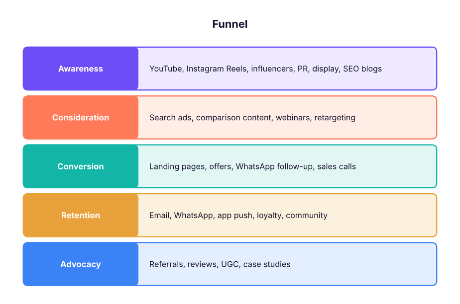

Digital Marketing Complete Guide: Strategy, SEO, Google and Meta Ads, Social, Email, WhatsApp, Analytics and AI
A complete digital marketing guide for India. Build a strategy and funnel, research customers and keywords, do on-page, technical and local SEO plus AI search (AEO/GEO), run Google Ads and Meta Ads with the right bidding, targeting and creatives, grow social and influencer programmes, run email and WhatsApp marketing, measure with GA4, UTMs and attribution, optimise conversion rates, plan budgets with unit economics, and use AI tools responsibly, with a full campaign capstone.
- Build a marketing strategy with positioning, personas, funnel stages and KPIs
- Plan and execute SEO including technical, local and AI-search optimisation
- Set up and optimise Google Ads and Meta Ads campaigns
- Run social, influencer, email and WhatsApp marketing that converts
- Measure with GA4, UTMs and attribution, and optimise with CRO and unit economics
The marketing funnel and strategy

| Step | Questions |
|---|---|
| Business goal | Revenue, leads, app installs, store visits? By when? |
| Audience and personas | Who buys, their problems, where they spend time, language (English, Hindi, regional) |
| Positioning | Why you vs alternatives in one sentence; proof points |
| Offer | Price, trial, bundle, guarantee, urgency |
| Channels | Where your audience is and what you can afford to test |
| KPIs | North-star metric plus channel metrics (CPL, CAC, ROAS, conversion rate) |
| Budget and timeline | Test budget, scale budget, 30-60-90 day plan |
SEO (search engine optimisation)
| Area | What to do |
|---|---|
| Keyword research | Google Keyword Planner, Search Console, Ahrefs/Semrush; group by intent: informational, commercial, transactional, navigational |
| On-page | One topic per page; keyword in title (≤ 60 characters), H1, URL, first paragraph; meta description (≈ 155 characters); internal links; FAQs |
| Content quality (E-E-A-T) | Experience, expertise, authoritativeness, trust: author bios, original data, examples, updated dates |
| Technical | Fast pages (Core Web Vitals: LCP, INP, CLS), mobile-first, HTTPS, XML sitemap, robots.txt, canonical tags, structured data (schema.org), no broken links |
| Local SEO | Google Business Profile, consistent name/address/phone, reviews, local pages ("PM course in Gurgaon") |
| Off-page | Links from relevant sites, PR, guest articles, directories, partnerships |
| AI search (AEO/GEO) | Clear answers early on the page, FAQ and how-to structure, schema, original facts and citations, brand mentions; check how ChatGPT, Gemini, Perplexity and Google AI Overviews describe you |
pages = [("Title tag", "Learn AI Product Management in 12 Weeks | Live Course, Gurgaon & Online", 60),
("Meta description", "Become an AI-first PM with live classes, 25+ case studies, a free 570-page handbook and job support. Next cohort starts soon - book a free counselling call.", 155)]
for name, text, limit in pages:
print(f"{name}: {len(text)} characters (limit about {limit}) ->", "OK" if len(text) <= limit else "too long, Google may cut it")Title tag: 71 characters (limit about 60) -> too long, Google may cut it Meta description: 156 characters (limit about 155) -> too long, Google may cut it
Google Ads
| Campaign type | Use |
|---|---|
| Search | High-intent keywords ("data science course with placement") |
| Performance Max | Google's AI across Search, YouTube, Display, Gmail, Maps, Discover with your assets and conversion goals |
| Demand Gen | Visual ads on YouTube Shorts, Discover and Gmail for mid-funnel demand |
| YouTube (video) | Awareness and consideration |
| Display | Remarketing and reach |
| App campaigns | Installs and in-app actions |
Key ideas: match types (broad with smart bidding, phrase, exact), negative keywords, responsive search ads (up to 15 headlines and 4 descriptions), Quality Score (expected CTR, ad relevance, landing page experience), smart bidding (Maximise conversions, Target CPA, Target ROAS) once you have conversion data, and conversion tracking with Google tag / GA4 and enhanced conversions.
Meta Ads (Facebook and Instagram)
- Objectives: Awareness, Traffic, Engagement, Leads, App promotion, Sales.
- Structure: Campaign (objective, budget with Advantage+ campaign budget) → Ad set (audience, placements, optimisation event) → Ads (creatives).
- Audiences: broad targeting with strong creatives often wins; custom audiences (site visitors, customer lists) and lookalikes; Advantage+ automation.
- Tracking: Meta Pixel + Conversions API (server-side) for reliable conversion data.
- Creatives are the biggest lever: hook in the first 2 seconds, vertical video for Reels and Stories, captions, clear offer and CTA, test 3–5 concepts at a time.
- Lead ads with instant forms and a WhatsApp or call follow-up within minutes.
spend, impressions, clicks, leads, sales, revenue = 50_000, 400_000, 6_000, 300, 30, 1_80_000
print(f"CPM ₹{spend / impressions * 1000:.0f} | CTR {clicks / impressions:.2%} | CPC ₹{spend / clicks:.1f}")
print(f"CPL ₹{spend / leads:.0f} | lead-to-sale {sales / leads:.0%} | CAC ₹{spend / sales:,.0f} | ROAS {revenue / spend:.1f}x")CPM ₹125 | CTR 1.50% | CPC ₹8.3 CPL ₹167 | lead-to-sale 10% | CAC ₹1,667 | ROAS 3.6x
Social media and influencers
| Platform | Best for (India) |
|---|---|
| Instagram (Reels, Stories, carousels) | Consumer brands, education, creators |
| YouTube (long form + Shorts) | Tutorials, reviews, trust, search on YouTube |
| B2B, careers, professional education | |
| X (Twitter) | News, tech and founder voice |
| WhatsApp Channels and communities | Retention, updates, community |
| Moj/Josh/ShareChat | Regional-language reach |
Plan content pillars (educate, entertain, prove, sell), a weekly calendar, and repurpose one long piece into many short ones. For influencers: choose fit over follower count (micro-creators often convert better), brief clearly, track with unique codes and UTMs, and follow ASCI guidelines (#ad / disclosure labels).
Email and WhatsApp marketing
- Email: welcome series, nurture sequences, newsletters, abandoned cart, win-back; segment by behaviour; authenticate the domain (SPF, DKIM, DMARC) and follow Gmail/Yahoo bulk-sender rules.
- WhatsApp Business Platform: opt-in first; approved templates for marketing, utility and authentication messages; click-to-WhatsApp ads; chatbots for FAQs and lead qualification; respect frequency.
- Consent: the DPDP Act requires clear notice and consent and easy withdrawal; SMS needs DLT-registered headers and templates.
Analytics and attribution
| Tool | Use |
|---|---|
| GA4 | Events and conversions (key events), traffic sources, funnels, explorations, audiences |
| UTM parameters | utm_source, utm_medium, utm_campaign, utm_content, utm_term on every link you control |
| Google Tag Manager | Add and manage tags without code |
| Search Console | Queries, impressions, indexing and Core Web Vitals |
| Looker Studio | Free dashboards from GA4, Ads and Sheets |
| Microsoft Clarity / Hotjar | Heatmaps and session recordings for CRO |
from urllib.parse import urlencode
base = "https://www.skillnavora.in/program/genai-launchpad.html"
utm = {"utm_source": "instagram", "utm_medium": "paid_social", "utm_campaign": "genai_nov26", "utm_content": "reel_hook_a"}
print(base + "?" + urlencode(utm))https://www.skillnavora.in/program/genai-launchpad.html?utm_source=instagram&utm_medium=paid_social&utm_campaign=genai_nov26&utm_content=reel_hook_a
Attribution: last-click undervalues awareness; GA4's data-driven attribution, incrementality tests (geo or hold-out), and marketing mix modelling (MMM, for example Google's Meridian or Meta's Robyn) give a fuller picture.
Conversion rate optimisation (CRO)
Landing page checklist: one goal and one CTA, headline that matches the ad, proof (reviews, logos, numbers), clear price or "book a call", short forms, fast mobile load, WhatsApp button, FAQs, urgency only if real. Run A/B tests with enough traffic and one change at a time.
import math
visitors_each, conv_a, conv_b = 4000, 0.040, 0.050
se = math.sqrt(conv_a * (1 - conv_a) / visitors_each + conv_b * (1 - conv_b) / visitors_each)
z = (conv_b - conv_a) / se
print(f"lift {conv_b / conv_a - 1:.0%}, z = {z:.2f} ->", "significant at 95%" if abs(z) > 1.96 else "not significant yet; keep testing")lift 25%, z = 2.16 -> significant at 95%
Budgeting with unit economics
aov, gross_margin, repeat_orders = 2_500, 0.45, 2.2
ltv = aov * gross_margin * repeat_orders
for cac in (600, 1200, 2000):
print(f"CAC ₹{cac:5,d}: LTV ₹{ltv:,.0f}, LTV/CAC = {ltv / cac:.1f}", "-> healthy" if ltv / cac >= 3 else "-> fix CAC or LTV")CAC ₹ 600: LTV ₹2,475, LTV/CAC = 4.1 -> healthy CAC ₹1,200: LTV ₹2,475, LTV/CAC = 2.1 -> fix CAC or LTV CAC ₹2,000: LTV ₹2,475, LTV/CAC = 1.2 -> fix CAC or LTV
Start with a test budget split across 2–3 channels, kill losers quickly, scale winners gradually (20–30% budget steps), and keep 10–20% for new experiments.
AI in digital marketing
| Task | Tools |
|---|---|
| Research and strategy | Claude, ChatGPT, Gemini, Perplexity (with your data and fact-checking) |
| Copy and content | Claude/ChatGPT for drafts in your brand voice; Canva Magic Studio; Adobe Firefly |
| Video | CapCut, Descript, HeyGen, Synthesia, Runway (disclose AI avatars) |
| Ads | Google Performance Max assets, Meta Advantage+ creative, AI-generated variants for testing |
| Automation | n8n, Make, Zapier connecting forms, CRM, WhatsApp and email |
| Analytics | GA4 insights, Looker Studio, Claude for analysing exported data |
Rules: keep a human editor, check facts and claims (ASCI rules on misleading ads), protect customer data, and label synthetic media.
Capstone: launch a course or D2C product in 60 days
- Strategy one-pager: persona, positioning, offer, KPIs, budget.
- SEO: 10 keywords by intent, 3 pages and 4 blog posts, Google Business Profile.
- Ads: one Search campaign with negatives, one Meta lead campaign with 3 creative concepts, remarketing.
- Social: 4-week Reels and carousel calendar; 3 micro-influencers with codes.
- Email/WhatsApp: welcome and nurture sequences; lead follow-up within 5 minutes.
- Measurement: UTMs, GA4 key events, Looker Studio dashboard; weekly review of CPL, CAC, conversion rate and ROAS; one A/B test per week.
Summary
- Start with goal, audience, positioning, offer and KPIs; then pick channels per funnel stage.
- SEO needs intent-based keywords, quality content, technical health, local presence and AI-search readiness.
- Google Ads captures intent; Meta Ads creates demand with creatives as the main lever.
- Measure with GA4, UTMs and better attribution; optimise landing pages and budgets with unit economics.
- Use AI to speed up research, content and testing, with human review and compliance.
1. Which metric tells you the cost of acquiring one paying customer?
2. Which Google Ads campaign type uses AI across Search, YouTube, Display, Gmail, Maps and Discover?
3. What improves Meta conversion tracking when browser cookies are limited?
4. What does utm_medium describe?
5. Which is a healthy LTV:CAC ratio guideline?
6. What must Indian influencer posts include?
Create a 30-day digital marketing plan for the GenAI Launchpad program with a ₹1,00,000 budget: persona, positioning line, 10 keywords by intent, one Search and one Meta campaign structure with 3 ad ideas each, a UTM naming convention, a landing-page checklist, and a KPI table with targets for CPL, conversion rate and CAC.
Show solution
A strong plan allocates for example ₹40k Search, ₹45k Meta, ₹15k tests and remarketing; defines CPL targets from past data or benchmarks; uses consistent UTMs (source/medium/campaign/content); and includes a weekly review rhythm and an A/B test backlog.
Q: Your CPL doubled last week. What do you check? Tracking changes, auction/competition and CPMs, creative fatigue (frequency, CTR drop), audience or budget changes, landing page speed or errors, and seasonality; then fix the biggest driver.
Q: SEO vs paid search? SEO builds compounding, lower-cost traffic over months; paid search buys immediate, controllable intent. Most brands run both and share keyword insights.
Q: How do you measure brand campaigns? Reach and frequency, brand-search lift, direct traffic, brand-lift studies, and incrementality or MMM, not last-click conversions alone.
Q: What is a good landing page? Message match with the ad, one goal, clear value and proof, simple form, fast mobile load, and a tested CTA.
Q: How do you use AI responsibly in marketing? For research, drafts and variants with human review, fact-checking, brand and legal compliance, consent-based data, and disclosure of synthetic media.
Learn more
Practise more online
Free, trusted places to test yourself on this topic. Links open the original site in a new tab.